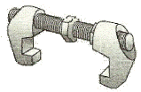
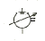
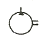
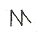
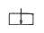

컨테이너크레인운전기능사 (2012-07-22 기출문제)
1과목: 임의 구분
1. 컨테이너크레인에 설치된 와이어로프가 아닌 것은?
- 거더 와이어로프
- 호이스트 와이어로프
- 트롤리 와이어로프
- 붐 와이어로프
(정답률: 78%)

2. 트랜스퍼크레인에 대한 설명으로 가장 적절한 것은?
- 트랜스퍼크레인은 타이어식으로 디젤엔진에 의해서만 가동된다.
- 트랜스퍼크레인은 ISO 20, 40, 45피트의 컨테이너를 처리할 수 있다.
- 호이스트, 트롤리, 갠트리 운전속도는 한국공업규격에 정해져 있어 어느 장비나 동일하다.
- 레일 위에서 주행할 수 있도록 제작된 장비를 RTTC라고 부른다.
(정답률: 94%)
3. 와이어로프의 특성을 설명한 것으로 틀린 것은?
- 와이어로프에 하중을 가하면 늘어나며, 이러한 신율은 로프의 선정 및 장비를 설계할 때 대단히 중요하다.
- 와이어로프 최초 사용시 적정하중을 가하면 스트랜드 및 소선이 불안정한 상태로 되는 경증가 현상이 일어난다.
- 와이어로프는 로프를 구성하는 소선수와 스트랜드수가 많을수록 유연하다.
- 와이어로프에 슬립 및 급제동 등으로 인해 충격하중이 가해지면 로프의 수명단축은 물론 절단사고의 원인이 된다.
(정답률: 78%)
4. 크레인작업 표준신호지침에 따른 신호법 중 집게(검지)손가락을 위로해서 수평원을 크게 그리며 호각을 “길게, 길게” 부는 신호방법은?
- 비상 정지
- 위로 올리기
- 붐 위로 올리기
- 천천히 조금씩 위로 올리기
(정답률: 80%)
5. 컨테이너크레인의 구조물이 아닌 것은?
- 붐(Boom)
- 트롤리 거더(Trolley girder)
- 오륜(Fifth wheel)
- 포탈 빔(Portal beam)
(정답률: 94%)
6. 와이어로프의 폐기기준을 설명한 것이 아닌 것은?
- 한 꼬임에서 소선의 수가 10% 이상 절단된 것
- 지름의 감소가 공칭지름의 3%를 초과한 것
- 킹크된 것
- 심하게 변형되거나 부식된 것
(정답률: 81%)
7. 컨테이너크레인의 구름방지장치는?
- 타이다운(Tie down)
- 앵커(Anchor)
- 붐 래치(Boom latch)
- 버퍼(Buffer)
(정답률: 70%)
8. 야드 크레인에서 SWL 50LT 의미는?
- 최소작업하중 50LT를 의미한다.
- 연속작업하중 50LT를 의미한다.
- 최대작업하중 50LT를 의미한다.
- 안전작업하중 50LT를 의미한다.
(정답률: 86%)
9. 스프레더의 주요동작을 수행하는 장치가 아닌 것은?
- 트위스트 록(Twist lock) 장치
- 플리퍼(Flipper) 장치
- 텔레스코픽(Telescopic) 장치
- 제동(Brake) 장치
(정답률: 84%)
10. 컨테이너크레인에서 레일 클램프의 기능으로 가장 알맞은 것은?
- 계류된 크레인이 바람에 의해 밀리는 것을 방지하는 장치
- 계류된 크레인이 풍압에 의해 전복되는 것을 예방하는 장치
- 크레인의 작업위치를 조정하는 장치
- 크레인이 작업 중 바람에 의해 밀리는 것을 방지하는 장치
(정답률: 80%)
11. 선박 위에 기울어지거나 비틀어져 놓여 있는 컨테이너를 똑바로 들어올리기 위해 컨테이너와 동일하게 스프레더를 기울이거나 비틀게 하는 장치는?
- 케이블 릴
- 레일 클램프
- 트위스트 록
- 틸팅 디바이스
(정답률: 84%)
12. 운전실의 트위스트 록 바이패스(Twist lock by-pass)스위치를 사용할 때 발생하는 현상은?
- 트위스트 록이 작동되지 않는다.
- 트위스트 록이 순간적으로 풀린다.
- 스프레더가 컨테이너 착상되어 있지 않아도 트위스트 록 장치가 작동한다.
- 트위스트 록을 작동시키기 위한 착상 리미트 스위치가 작동하지 않는다.
(정답률: 72%)
13. 컨테이너크레인에서 작업할 수 있는 컨테이너의 열(Row)과 크레인 아웃 리치(Out reach)가 가장 바르게 연결된 것은?
- 13열 - 30m
- 16열 - 45m
- 22열 - 50m
- 25열 - 60m
(정답률: 92%)
14. 컨테이너크레인의 붐 인양장치가 작동되지 않을 경우 확인해야 할 사항과 가장 거리가 먼 것은?
- 붐 래치 핀(Latch pin)이 혹(Hook)에서 걸려있는지 확인한다.
- 붐 와이어로프가 활차에서 탈선되어 있는지 확인한다.
- 트롤리가 주차(정지)위치에 있는지 확인한다.
- 레일 클램프가 잠겨있는지 확인한다.
(정답률: 74%)
15. 트롤리의 종류에 해당하지 않는 것은?
- 맨(Man) 트롤리
- 크랩(Crab) 트롤리
- 하프로프(Half rope) 트롤리
- 와이어로프(Wire rope) 트롤리
(정답률: 76%)
16. 컨테이너크레인의 레일 글램프 작동에 대한 설명이 아닌 것은?
- 크레인의 계류장치로 외부영향(태풍 등)으로 인한 폭주 방지용 브레이크 장치라 할 수 있다.
- 레일 글램프 잠김 센서(Limit Switch)가 감지된 후에 주행 운전이 가능하다.
- 유압펌프를 운전하여 스프링 압력보다 강한 유압으로 레일 클램프를 동작시킨다.
- 주행정지 시 유압실린더의 작도유가 복귀되고 스프링에 의해 레일 클램프는 잠김 상태가 된다.
(정답률: 60%)
17. 3상 유도전동기의 회전속도 제어법에 속하지 않는 것은?
- 극수 변환법
- 주파수 제어법
- 전압 제어법
- 계자 제어법
(정답률: 53%)
18. PLC의 입ㆍ출력 장치에서 입력장치에 해당되는 것은?
- 솔레노이드 밸브
- 프린터
- 리미트 스위치
- 램프
(정답률: 77%)
19. 아날로그 량이 아닌 것은?
- 전압
- 전류
- 압력
- 비트(0, 1)
(정답률: 91%)
20. 트롤리에 설정되어 있는 감속구간의 하드웨어 배치로 옳은 것은?
- 감속 → 정지 → 비상정지
- 비상정지 → 정지 → 감속
- 감속 → 비상정지 → 정지
- 정지 → 비상정지 → 감속
(정답률: 84%)
2과목: 임의 구분
21. 컨테이너크레인에 사용되는 싱글 스프레더의 착상용리미트 스위치의 개수는?
- 2개
- 4개
- 6개
- 8개
(정답률: 78%)
22. 주행충돌방지장치에서 적용된 센서에서 가장 우선적으로 고려해야 할 사항은?
- 거리측정
- 강도측정
- 기계측정
- 반응성 측정
(정답률: 82%)
23. 컨테이너크레인에서 헤드블록과 스프레더를 연결하는 장치는?
- 틸팅 디바이스
- 로프 텐션너
- 트위스트 록
- 레일 클램프
(정답률: 70%)
24. 붐 래치 확인장치가 아닌 것은?
- 훅이 걸렸는지 확인하는 리미트 스위치
- 훅이 올라가는 것을 확인하는 리미트 스위치
- 훅이 내려가는 것을 확인하는 리미트 스위치
- 훅에 로프가 벗어난 것을 확인하는 리미트 스위치
(정답률: 70%)
25. 전기 스위치가 평상시 열려 있다가 외력이 가해지면 닫히는 접점은?
- a 접점
- b 접점
- c 접점
- d 접점
(정답률: 86%)
26. 컨테이너크레인 모니터링 시스템에 나타나지 않는 내용은?
- 경보 내용
- 출근 내용
- 통신 내용
- 전원공급 내용
(정답률: 92%)
27. 입력신호를 받고 동작할 때, 소정의 시간이 경과한 후에 회로를 개폐하는 접점은?
- 기계적 접점
- 릴레이 접점
- 한시동작 접점
- 동시복귀 접점
(정답률: 87%)
28. 저항 20Ω의 전기회로에 50V의 전압을 가할 때 흐르는 전류 I(A)는?
- 1.5
- 2.1
- 2.5
- 3.2
(정답률: 82%)
29. 컨테이너크레인에서 틸팅 디바이스의 실린더 위치를 체크하는 센서는?
- 엔코더
- 리드 센서
- 오토 센서
- 근접 센서
(정답률: 79%)
30. 컨테이너크레인의 호이스트 동작(Hoist up) 인터록(Interlock) 조건으로 옳지 않은 것은?
- 호이스트 하중 초과
- 호이스트 로프 처짐 발생
- 상한 리미트 스위치 동작
- 상한 비상정지 리미트 스위치 동작
(정답률: 61%)
31. 선박이 물에 떠 있을 때 물에 잠기지 않는 선체의 높이, 즉 수면과 갑판 상면과의 거리를 무엇이라 하는가?
- 용골
- 건현
- 홀수
- 트림
(정답률: 82%)
32. 컨테이너 터미널의 안벽에 접한 부분으로 하역장비(Gantry crane등)가 설치되어 있는 곳은?
- 컨테이너 화물조작장(CFS)
- 마샬링 야드(Marshaling yard)
- 에이프론(Apron)
- 컨테이너 야드(Container yard)
(정답률: 78%)
33. 수입 컨테이너의 본선 하역에 있어서, 현장(포맨, 신호수, 언더맨 등)에 전달되는 서류가 아닌 것은?
- 본선 적부계획도(Stoage Plan)
- G/C 작업계획도(Working Schedule)
- 작업진행표(Sequence List)
- 컨테이너 선적목록(Container Loading List)
(정답률: 80%)
34. 컨테이너크레인의 운전실에 있는 마스터 컨트롤러(Master controller)의 조작을 잘못 설명한 것은?
- 좌측 컨트롤러는 트롤리 조작을 한다.
- 우측 컨트롤러는 호이스트와 갠트리를 조정한다.
- 좌ㆍ우측 컨트롤러의 레버를 가운데에 두면 해당 장치가 정지된다.
- 좌측 컨트롤러는 십자로 움직이며, 우측 컨트롤러는 일자로 움직인다.
(정답률: 78%)
35. 컨터에너 기기의 수도를 증명하는 서류로서 컨테이너를 터미널에 반입(또는 반출)할 때, 교환되는 서류는?
- Dock Receipt
- Shipping Receipt
- Delivery Order
- Equipment Interchange Receipt
(정답률: 80%)
36. 다음 그림의 명칭은?

- 스크루 브리지 피팅
- 브라싱 피팅
- 톱 소켓 피팅
- 스페이서 스크루 피팅
(정답률: 92%)
37. 드라이 컨테이너의 천장과 측벽을 제거하여 바닥구조와 네 모퉁이의 지주만으로 강도를 유지하는 컨테이너로써 대형화물, 장철물, 중량물 등의 화물운송에 적합한 것은?
- 22G0
- 22R0
- 22U0
- 22P0
(정답률: 56%)
38. 컨테이너터미널에서 사용되는 Bay Plan에 표시되지 않은 사항은?
- 선적항
- 컨테이너 번호
- 선사명
- 화주명
(정답률: 74%)
39. 본선의 적부계획을 수립할 때 플래너(Planner)가 고려해야 할 요소 또는 원칙으로 거리가 먼 것은?
- 선박의 강항서 및 안정성 유지
- 컨테이너 적재 중량
- 컨테이너 외부 도장 색
- 본선 작업시 양적화 작업 최소화
(정답률: 89%)
40. 지붕의 대부분이 개방되어 있는 컨테이너로써 어느 정도의 수밀성을 갖도록 가공한 플라스틱 시트(Tarpaulin) 등으로 지붕을 덮은 것은?
- 43G0
- 42R0
- 43U0
- 42P0
(정답률: 66%)
3과목: 임의 구분
41. 컨테이너 터미널의 위험요인으로 관계가 가장 적은 것은?
- 장비의 이동
- 작업자의 심신 피로
- 선박의 출항
- 비, 바람 등 날씨
(정답률: 75%)
42. 컨테이너크레인의 작업 중 조치사항에 해당되는 것은?
- 컨테이너크레인의 주변 점검
- 윤활 상태 점검
- 각종 스위치 확인
- 규정된 양정 이상 감아올리기 금지
(정답률: 70%)
43. 화물취급자가 화물을 들어 올리거나 운반할 때, 타인의 도움을 요청해야 하는 중량은?
- 화물이 자기체중의 1/2 이상
- 화물이 자기체중의 1/3 이상
- 화물이 자기체중의 1/4 이상
- 화물이 자기체중의 1/5 이상
(정답률: 78%)
44. 스프레더 운전의 펌프기동 조건에 해당하지 않는 것은?
- 스프레더 모드선택(운전석에서 조작)
- 스프레더가 연결되어 있을 경우
- 폴트 발생시
- 컨트롤 온(Control On)일 경우
(정답률: 69%)
45. 과전류 보호장치에 대한 설명으로 옳지 않은 것은?
- 과전류보호장치란 차단기, 퓨즈 및 보호계전기 등을 말한다.
- 과전류 보호장치는 반드시 접지선 외의 전로에 병렬로 연결하여 과전류 발생시 전로를 자동으로 차단하도록 설치하여야 한다.
- 차단기, 퓨즈는 계통에서 발생하는 최대 과전류에 대하여 충분하게 차단할 수 있는 성능을 가져야 한다.
- 과전류 보호장치가 전기계통상에서 상호 협조ㆍ보완되어 과전류를 효과적으로 차단하도록 하여야 한다.
(정답률: 75%)
46. 컨테이너 터미널에서 실시해야할 최소한의 비상훈련에 대한 설명으로 옳지 않은 것은?
- 화재 : 장치장, 하역장비, 본선, 사무실, 위험물 등
- 응급처치 상황 : 신속한 장비의 구입, 서류소각 등
- 화학물질 누출 : 호흡기구, 들것, 안경, 청소작업 등
- 탈출 훈련 : 사무실, 작업장, 장치장, 장비 등
(정답률: 81%)
47. 선박 출입수단인 현문 사다리의 기울기는 몇 도 이하여야 하는가?
- 40
- 50
- 60
- 70
(정답률: 82%)
48. 「위험물의 해상운송에 관한 국제통일규칙」에서 위험물이 관련된 사고시 사용해야 하는 의료응급처리지침번호를 나타내는 것은?
- UN No.
- Packing No.
- MFAG No.
- EMS No.
(정답률: 69%)
49. CFS에서의 화물취급에 대한 설명으로 옳지 않은 것은?
- 위험화물을 취급할 때는 IMO 위험화물 코드에서 지시하는 요구사항을 따른다.
- CFS 근로자는 그들이 수행하는 작업에 알맞은 보호 장구를 착용하여야 한다.
- 램프(Ramp) 등 창고의 출입수단은 1/10 이상의 경사도가 있어서는 안 된다.
- CFS에의 화물적치는 전체 면적의 60% 이상을 넘어서는 안 된다.
(정답률: 70%)
50. 본선 홀드 내에서 스프레더가 올라오다가 네 모서리 중 한 부분이 걸리면 호이스트용 와이어로프에 큰 장력이 걸리고 더 올리면 와이어로프에 큰 손상을 주게 된다. 이러한 문제점에 대해 충격을 완화하고 호이스트 와이어로프를 보호하는 장치는?
- 타이다운
- 로프 텐셔너
- 트롤리
- 틸팅 디바이스
(정답률: 48%)
51. 유압모터에 장착되어 있는 릴리프 밸브의 기능 중 틀린 것은?
- 고압에 대한 회로 보호
- 모터의 속도 증가
- 설정압력 유지
- 모터 내의 쇼크방지 기능
(정답률: 69%)
52. 유압장치에서 비정상 소음이 나는 원인으로 가장 적합한 것은?
- 유압장치에 공기가 들어있다.
- 유압펌프의 회전속도가 적절하다.
- 무부하 운전 중이다.
- 점도지수가 높다.
(정답률: 73%)
53. 가변 용량형 유압펌프의 기호 표시는?




(정답률: 85%)
54. 건설기계에서 유압 작동기(액추에이터)의 방향전환 밸브로서 원통형 슬리브 면에 내접하여 축방향으로 이동하여 유로를 개폐하는 형식의 밸브는?
- 스풀 형식
- 포핏 형식
- 베인 형식
- 카운터밸런스 밸브 형식
(정답률: 64%)
55. 작동유에서 점도의 단위로 맞는 것은?
- kg
- cm
- P
- s
(정답률: 86%)
56. 유압장치에 사용되는 배관의 종류에 해당하지 않는 것은?
- 감관
- 플라스틱관
- 스테인레스관
- 알루미늄관
(정답률: 80%)
57. 유압장치에서 작동유의 오염은 유압기기를 손상시킬 수 있기 때문에 기기 속에 혼입되는 불순물을 제거하기 위해 사용되는 것은?
- 스트레이너
- 패킹
- 배수기
- 릴리프 밸브
(정답률: 80%)
58. 2개 이상의 분기회로에서 작동 순서를 자동적으로 제어하는 밸브는?
- 시퀀스 밸브
- 릴리프 밸브
- 언로드 밸브
- 감압 밸브
(정답률: 76%)
59. 유압 장치에서 피스톤 펌프의 특징이 아닌 것은?
- 펌프 전체 효율이 기어 펌프보다 나쁘다.
- 구조가 복잡하고 가변용량 제어가 가능하다.
- 가격이 고가이며 펌프 용량이 크다.
- 고압, 초고압에 사용된다.
(정답률: 66%)
60. 강철제의 용기에 기체를 봉입한 고무주머니를 넣은 구조로 되어 있는 촉암기는?
- 블래더식
- 피스톤식
- 다이어프램식
- 스프링가압식
(정답률: 56%)